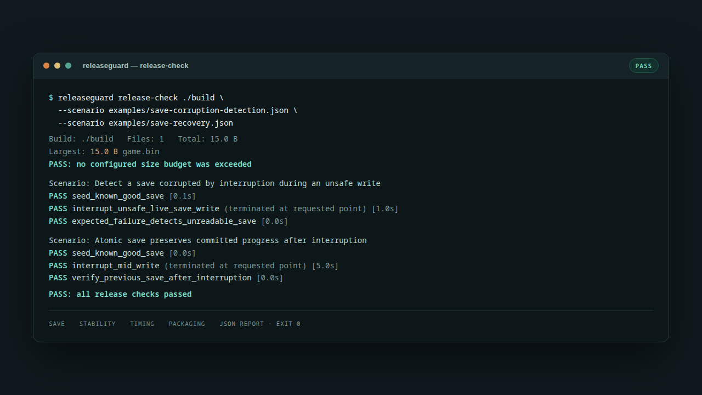

Why release checks live in five different places
Save validation is usually manual. Stability runs are undocumented. Build size is noticed after upload. Timing budgets live in someone's head. Each check might exist, but none of them produces one repeatable pass/fail result that a release manager or CI job can trust.
ReleaseGuard gives those checks one manifest format and one report. It does not replace playtesting or a profiler; it makes the checks you already trust repeatable and reviewable.
What it checks
Save corruption and recovery
Scenarios can start a disposable write, interrupt it at a chosen point, and require either detection of a corrupt save or preservation of the previous committed save. You supply a game-specific validator for real save formats.
Stability and timing budgets
Launch a test build, capture output, enforce exit-code expectations, interrupt a process, and fail when a step exceeds its configured duration.
Packaged-build review
Report build size, large files, duplicate files, likely development leftovers, and growth against a baseline. Findings are review hints; the build is never modified.
Snapshot and restore with a safety net
Create hashed save snapshots, verify them, and restore with a dry run and a preserved pre-restore backup.

Quick start
Extract the archive and scan a packaged build — no manifest required:
python3 releaseguard.py analyze ./build --find-duplicatesRun the bundled synthetic save scenarios:
python3 releaseguard.py scenario examples/save-corruption-detection.json --output results
python3 releaseguard.py scenario examples/save-recovery.json --output resultsGate CI with your own trusted manifest:
python3 releaseguard.py release-check ./build \
--scenario my-save-test.json \
--max-size-mib 2048 \
--output release-resultsCommon problems
Does an interrupted save write corrupt player progress?
Run a disposable scenario that interrupts the write, then assert recovery or detect corruption. The included examples are synthetic and prove the harness, not a commercial game.
How do I stop shipping a bloated build?
Compare against a baseline and set a growth budget. Duplicate files and development leftovers are reported for review.
Can I block a release from CI?
Yes. release-check exits nonzero when a configured check fails.
Full problem guide and limits ↗
Requirements and limits
- Windows or Linux, Python 3.10 or newer, no runtime dependencies.
- Not a Unity, Unreal, or Godot plugin; manifests supply build and save commands.
- Cannot judge whether an arbitrary proprietary save is logically valid without a game-specific validator.
- Not a crash reporter, telemetry service, frame-time profiler, or save-repair tool.
- Proprietary freeware license. Source is published for inspection; reuse and resale are not permitted.